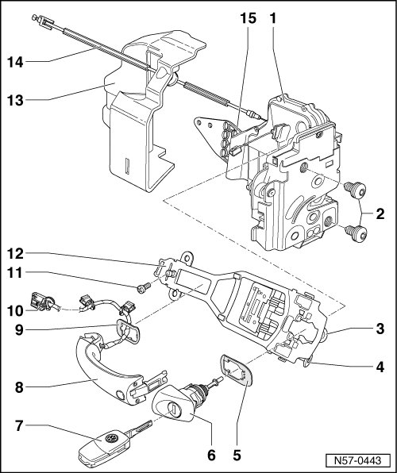

Door Handle and Door Lock Assembly Overview
Front Door
Door Handle and Door Lock Assembly Overview

1 Door lock
• Door lock can only be removed in conjunction with subframe.
• Removing and Installing, refer to --> [ Door Lock ] Front Door
2 Bolt
• 20 Nm
3 Retaining bolt
• This bolt provides additional security for the lock cylinder housing.
• Only on vehicles with lock cylinder.
4 Bolt
• By loosening this bolt, locking mechanism for lock cylinder housing - 6 - is disengaged and may be removed from mounting bracket.
• Do not install the bolt - 4 - if the lock cylinder housing is not inserted.
5 Backing
6 Lock cylinder housing
• Removing, refer to --> [ Lock Cylinder Housing ] Front Door
• Lock cylinder is not supplied as individual parts.
• Lock cylinder only on driver side.
7 Key
• With radio-frequency remote control (foldable)
• Battery, Changing, refer to --> [ Folding Main Key with Radio-Frequency Remote Control Assembly Overview ] Central Locking
• Adapting new/additional keys to remote control, refer to --> [ Adaptation of Keys with Radio-Frequency Remote Control ] Central Locking
8 Door handle
• Removing and Installing, refer to --> [ Door Handle ] Front Door
• With cable routing (Kessy), refer to --> [ Door Handle with Cable Routing (Kessy) ] Door Handle With Cable Routing (Kessy)
9 Backing
10 Wiring for touch sensor (Kessy)
• G 415 Driver Outside Door Handle Touch Sensor, refer to --> [ Door Handle with Cable Routing (Kessy) ] Door Handle With Cable Routing (Kessy)
• G 416 Front Passenger's Outside Door Handle Touch Sensor, refer to --> [ Door Handle with Cable Routing (Kessy) ] Door Handle With Cable Routing (Kessy)
11 Bolt
• 6 Nm
12 Mounting bracket
• removing:
• The door handle, lock cylinder housing and subframe are removed
- Remove the bolt - 11 -, slide the mounting bracket back slightly and remove it from the door.
13 Cap
• Does not belong to packaged contents of door lock
14 Release
• For lock release.
15 Angle bracket
• Bolted and riveted to door lock.
• Does not belong to packaged contents of door lock
• Must be replaced every time it is removed.